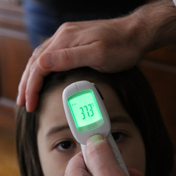

See the last section of the module reading and here for a demonstration of these steps.
 Machowiak et al. (1992)1 provided a critical examination of whether normal body temperature was 37oC. They recorded the orally-determined body temperatures of 65 male and 65 female subjects. Use their results in Table 1 and assume that α=0.05 and σ=0.41 to construct and interpret a confidence region for the population mean body temperature.
Table 1: Summary statistics for the body temperature of a sample of men and women.
n mean sd min Q1 median Q3 max
130.00 36.81 0.41 35.70 36.60 36.80 37.10 38.20 Researchers examined the size of two different species of beetles. They hypothesized that the thorax length of the Halticus oleracea species would be greater than 190 μm. Use their results for the Halticus oleracea species in Table 2 and assume that σ=14 and α=0.05 to construct and interpret a confidence region for the beetle’s mean thorax length.
Table 2: Summary statistics for the thorax length for two species of beetles.
species n mean sd min Q1 median Q3 max
1 Halticus.carduorum 20 179.55 10.09 158 175.75 180.5 181.75 198
2 Halticus.oleracea 18 194.17 14.03 170 189.75 192.0 200.75 221This is not a confidence region question, rather it is asking you to compute a sample size given σ, a margin-of-error tolerance, and a level of confidence (which, ultimately, is turned into a Z*). See here or the appropriate section in the reading for the formula and example calculations.
Suppose that you are starting a business and it is important for your business plan to have an estimate of the mean weekly Internet usage of households in your city. Assume that you know from previous surveys that the standard deviation of weekly Internet usage is 6.95 minutes.2